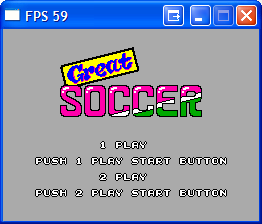
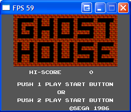

Zuko
Well sourceforge accepted my project. The project is called Zuko and its website can be found here.
Zuko is a multi game console emulator. At first it will fully emulate the Gameboy, Sega Master System and Sega Mega Drive/Genesis. However this is not the main reason for Zuko being created. With all the next generation consoles being released (XBOX 360, playstation 3 etc) in my opinion the emulation scene is struggling to survive. It is no longer possible for one programmer to emulate nextgen consoles. It will take a team of talented emulator programmers years to do. Zuko’s main purpose is to make the learning curve from new emulator programmers less steep so they can develop the skills needed for the emulation scene to continue.
Zuko will allow the user to debug the ROMS and give them control over the console. It will have a tile and sprite viewer and allow the user to change their attributes (flips and zooms etc) as well as controlling the scrolling and the palette. The user can also edit the game speed and control the interupts. They will be able to view the register states as well as changing them to see how they affect the games. There will also be a lot more options aswell as being able to control the way the emulator works, for example switching between Interpreter to Binary Translation along with dynamic recompilation and threaded interpretation. The project will be completely open source and I will supply the svn repository details for Zuko and all the individual emulators. When I get the svn repo set up I’ll post the link straight away so you can all check my progress. I plan to completely finish the Gameboy, Master System and Mega Drive emulators first before integrating them into Zuko.
Future version of Zuko will support NES and the Nintendo 64 (now that will be one hell of a project!).
Oh and also Zuko can be used for a normal emulator to relive gaming classics! Like all my other emulators it will be programmed in C++ and will run under Windows and GNU/Linux.
Finally these are the two screenshots I promised in my last post

